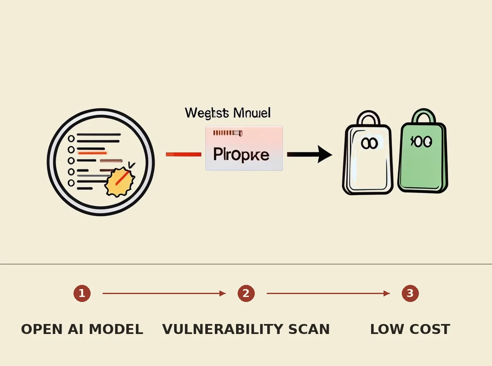

Cantina Security, in collaboration with Yeta Labs, has released apex-flash-1, an open-weights model specifically trained for vulnerability research. This 321.3B parameter model, fine-tuned with GRPO on 50 real vulnerability cases, successfully solved 40 out of 60 held-out bug tasks. The model offers a significantly more cost-effective solution for defenders, costing approximately $2.38 per run compared to $74.68 for a comparable proprietary model like Claude Opus 5 High.